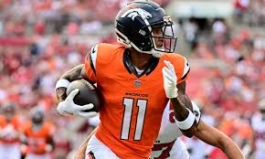
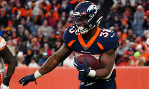

Broncos News

The Denver Broncos have shocked the nation this year as they are currently 8-5. Predicted to have less than 5 wins at the beginning of the season, rookie, Bo Nix has led the Broncos to an astonishing record.
Although the Broncos started the season a little slow with losses to the Geno-led Seahawks and the Fields-led Steelers, they had a surprising win against the Buccaneers where Nix went 25/36 for 216 yards and added 47 yards on the ground. Surtain and the defense also had a solid turnout with only 7 points allowed and an interception from Brandon Jones.
Even though their record may not show it, they have been plagued by injuries. In the win against the Buccaneers, Josey Jewell tore his ACL, Josh Reynolds was shot outside a strip club, Pat Surtain missed a few games with a concussion, Riley Moss has most recently been out with a leg injury, and there have been many more. Although their starters have been hurt, the second-string players have really come into their own.

One thing that the Broncos have been struggling with is their run game. Through 13 games, Javonte Williams is their leading rusher with only 446 yards. They have found a little bit of a boost the last few weeks by giving Jaleel McLaughlin the ball a few more times per game, but still have a long way to go. Many fans are expecting to see major changes in the run game next year and new faces in the backfield, whether that be in the draft, from trade, or from free agency.
Check out the Broncos main page.
- Broncos now 8-5
- 4 games remain
- 2-game lead on Colts in playoff standings
- Next game vs Colts
- Josey Jewell tears ACL/MCL

Another important issue for the Broncos has been the running back position. Like many teams, the Broncos rely heavily on their running backs to establish balance in their offense. However, injuries to running backs, such as hamstring strains, ankle injuries, and knee problems, have caused them to turn to multiple players throughout the season. This lack of consistency can disrupt offensive flow, making it difficult for the team to rely on the ground game.
The last time the Broncos had a competent QB they won the superbowl. In the 2015-2016 year before Peyton Manning retired the Broncos finished the season 13-3 winnin ghtier division, the AFC and finished it off with a superbowl win against the Cam Newton led Carolina Panthers. Below is a graphic of Peyton manning and Cam Newton and how they matched up through their first 6 seasons.

See my Resume
back to top